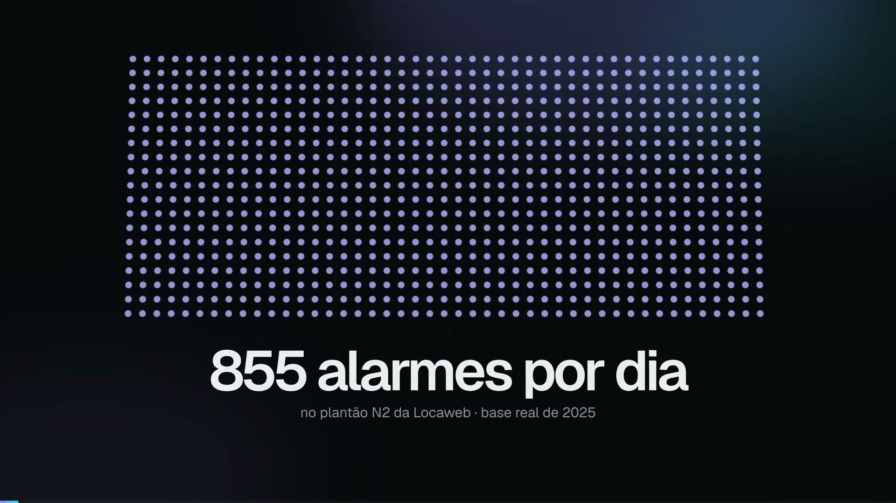

2º lugar no FIAP NEXT 2026
Abrir o painel Ver no GitHub
LocalOps
Copiloto de AIOps para o Challenge Locaweb. Filtra o ruído de alarmes no momento em que abrem, prevê a carga do plantão para amanhã e para a semana e explica cada número. No time, ajudei a desenvolver os modelos de previsão e de classificação e a implementar o copiloto de IA do painel. Também apresentei o pitch no estande, com o produto rodando sobre dados reais.
0,916AUC do filtro de ruído
−55%na fila diária de alarmes
95,3%do que precisa de ação mantido
Python, scikit-learn, SHAP, FastAPI, React